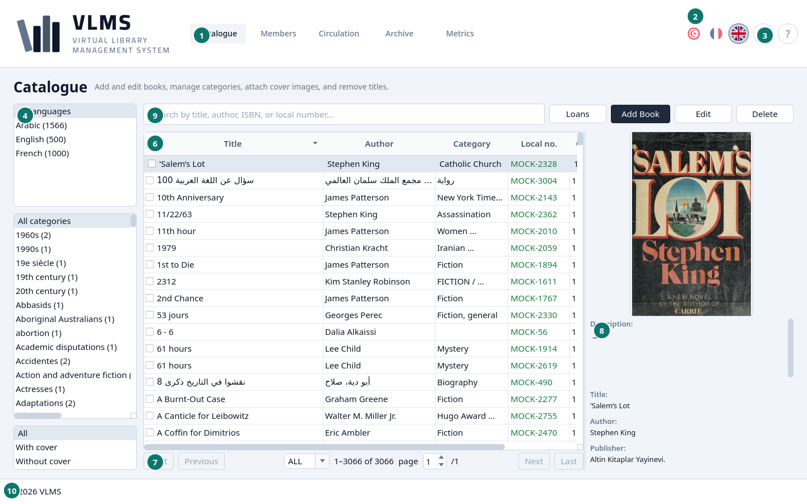
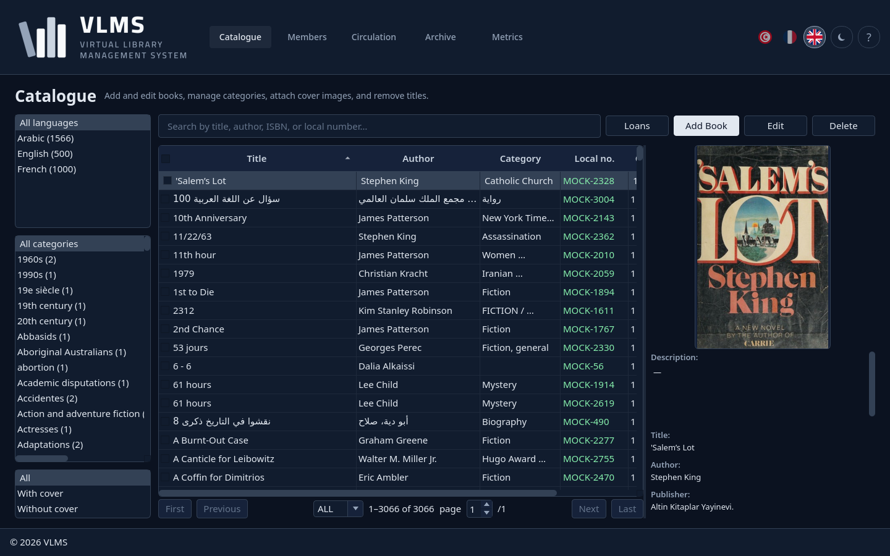
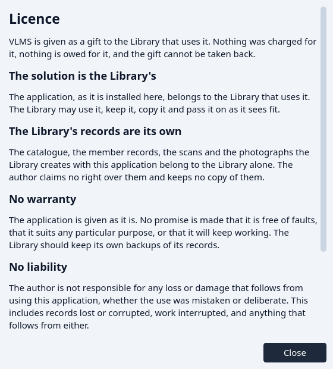
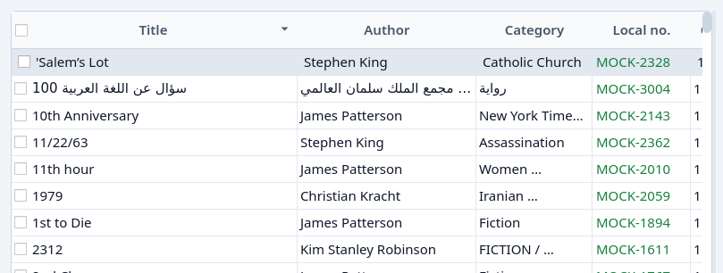
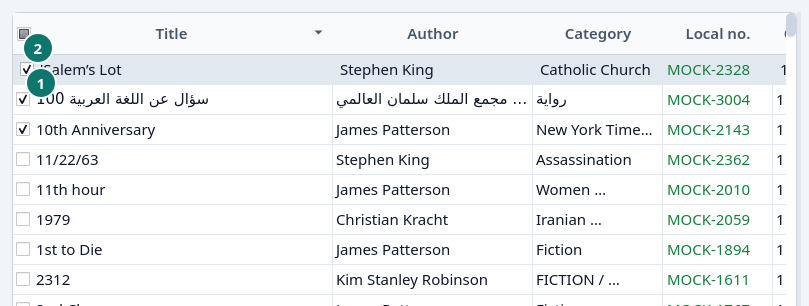

Getting started
The window, the list pages, sorting, and ticks.
Open VLMS. The window comes up on the Catalogue, in the language and the light or dark theme you left it in.


- Catalogue — the screen you are on. Members, Circulation, Archive, and Metrics sit beside it.
- The three flags. The filled one is the language of the screen. Choosing another flag switches the whole application at once.
- The theme button, and the ? beside it. The theme button turns the dark theme on and off. The ? opens this manual.
- The filters for this screen.
- Search.
- The list.
- The pager.
- The details of the highlighted row.
- The buttons for this screen.
- The footer. The library's name is a link.


The footer and the licence
The line in the footer opens the licence. It says the application is a gift to this library, that the library owns the application as it is installed here, and that the catalogue, the member records, and the photographs belong to the library. There is no warranty.


Close it with Close.
The shape of every list
Catalogue, Members, Circulation, and Archive are the same shape.
- The filter column is on the side. A choice there narrows the list. All means no narrowing on that filter.
- Search matches as you type. Clearing the box brings the full list back.
- The table is the list. Click a row to highlight it. The details panel then shows that row.
- The pager sits under the table. It opens on ALL, so the whole filtered list is loaded. You can choose 20, 50, or 100 instead. First and Last jump to the ends, and the page box jumps to a page. When the filtered list has fewer than 20 rows, the pager hides.
- The details panel is the highlighted row, including its picture when it has one.
- The button pad is the work for this screen: add, edit, lend, delete, and so on. A button follows the highlighted row. It stays grey when that row cannot take the action.
Sorting
Click a column heading to sort by it. Click it again to reverse the order. The heading shows which way the list is going.


The tick at the start of the first heading is not part of the sort. Click the middle of the heading, not the tick. See Ticks.
Ticks
A tick in the first cell of a row marks that row for a button. The tick in the heading marks every row on the page, or clears them.


- The tick of the highlighted row.
- The heading tick.
Delete, Restore, and Permanently remove act on every ticked row. With nothing ticked, they act on the highlighted row alone. Those buttons stay available while any row is ticked, even when the highlighted row itself could not take the action. Each ticked row is still checked on its own: a row that cannot be removed is skipped and the others go through.
A tick is only a mark. It is forgotten when the list is loaded again.